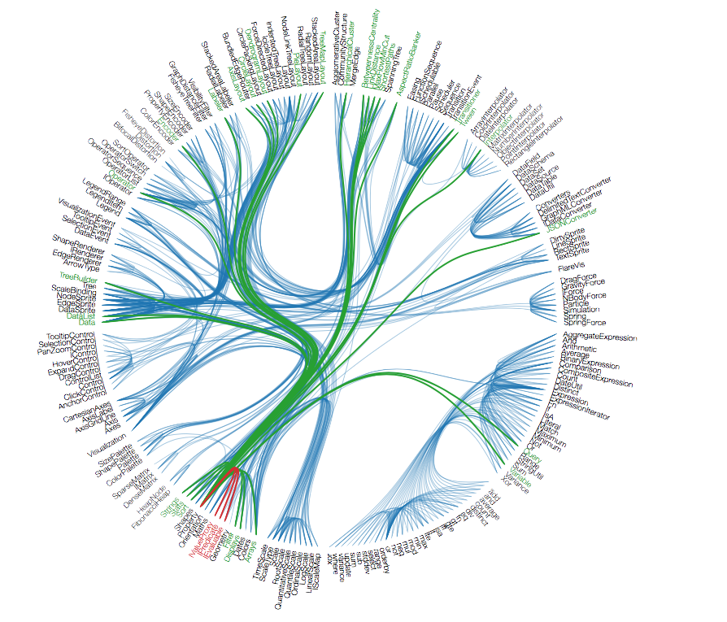

Why

What
Idea: don't test twice

classify equivalent data: equivalence class partitioning
don't test equivalent constellations more than once
Example: username
empty name / name too short
name taken
name ok
name too long
invalid chars
...
Idea: test boundaries
errors occur at the edges
left and right

invalid age < 0
too young 0 - 9
ok 10 - 20
too old > 20
-10, .., (-1, 0), 1, ..., 5, ..., 8, (9,10), 11, ..., 15, ..., 19, (20, 21), ..., 30derive coverage path(s)
equivalence classes: valid / invalid data
add knowledge about boundaries
combine: (valid)* with (0-1) invalid per test case
Total amount of tests

happy paths: combine EC valid cases (max. EC for a data field is the total amount of happy paths)
+
unhappy paths: one test case for each individual invalid EC